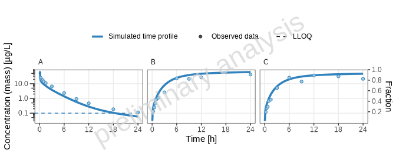
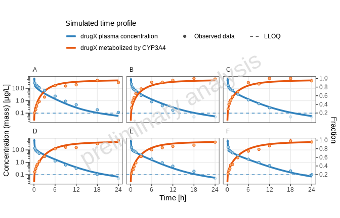
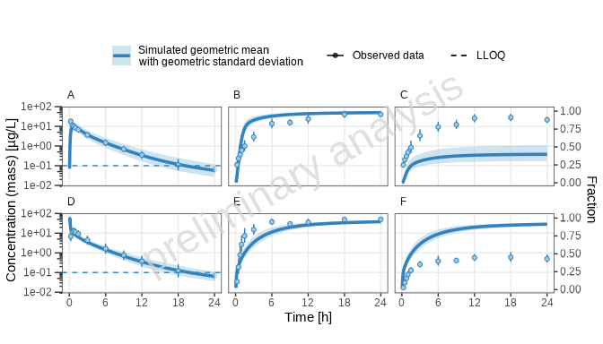
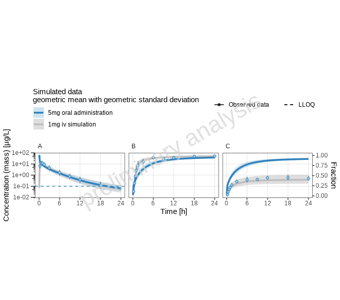
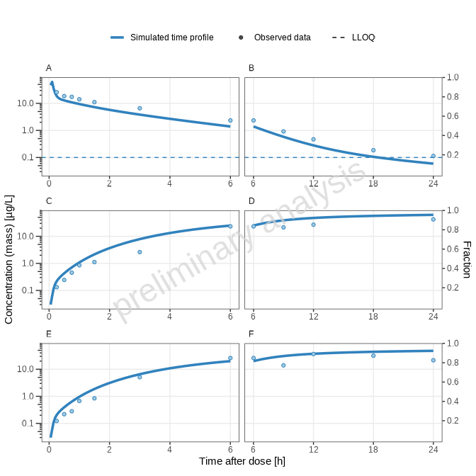

Tutorial: Time Profile Plotting
Tutorial_Timeprofiles.RmdIntroduction
Welcome to the Time Profile Plotting Tutorial! This guide will walk you through the process of generating time profile plots using the ospsuite.reportingframework package.
In this tutorial, we will focus on manually editing the Excel (xlsx) configuration tables to customize your plots effectively. By following the outlined steps, you will learn how to set up your project, import data, create simulations, and visualize results through various plotting techniques.
Prerequisites
Before you begin, ensure you have installed the
ospsuite.reportingframework package. Familiarity with R,
RStudio, and basic Excel operations will be beneficial as you navigate
through the tutorial.
Package Materials
The package contains the following materials used for the tutorial:
- Data files used for the tutorial:
timeprofiles_study1234_iv.csv,timeprofiles_study1234_po.csv - Final configuration tables:
DataImportConfiguration.xlsx,Individuals.xlsx,Populations.xlsx,Scenario.xlsx,Plots.xlsx - The final workflow:
workflow.R - The final Word document containing all plots generated during this
tutorial:
TutorialPlots.docx
You can access the folder containing this material using the command below:
print(system.file(
"extdata", "Tutorial",
package = "ospsuite.reportingframework",
mustWork = TRUE
))You can access the folder containing the models used in the tutorial (“iv_1_mg_5_min.pkml” and “po_3_mg_solution.pkml”) using the command below:
print(system.file(
"extdata", "Models",
package = "ospsuite.reportingframework",
mustWork = TRUE
))
#> [1] "/home/runner/work/_temp/Library/ospsuite.reportingframework/extdata/Models"Table of Contents
Setting Up the Project and Basic Simulations
Learn how to set up your project, save a template workflow, and initialize the project structure for time profile plotting.Adding virtual twin populations
Discover how to define and export virtual twin populations for more refined simulations.Adding random populations and Use of aggregated data
Understand how to aggregate individual data and work with aggregated random populations for comparative analysis.Adding reference populations
Learn how to Display reference scenarios by modifying parameters in existing random population scenarios.Adding plots with different time ranges
Explore how to visualize pharmacokinetic data across various time ranges to reveal different drug behavior aspects.Report Creation
Explore how to visualize pharmacokinetic data across various time ranges to reveal different drug behavior aspects.
1) Setting Up the Project and Basic Simulations
Step 1: Save Template Workflow
- Select your project directory (
<rootDirectory>). In this directory the reporting framework folder structure will be established (if not already existing). - Check if the subfolder
<rootDirectory>/Scripts/ReportingFrameworkexist, and if not create it. (<configurationDirectory>). - Open RStudio and navigate to the Addins menu.
- Select “Open Template Workflow” to create a new workflow file. Save
the template in the
<configurationDirectory>asworkflow.R. At the top of the workflow file, you can add a description of the purpose of your workflow.
Step 2: Initialize Project Structure
Execute the first lines (listed below) of your workflow. This will:
Change the working directory to the workflow file location. - Set some graphic defaults. - Set some options to switch between final valid runs and preliminary runs, such as watermarks. - Initialize the project directory. - Load the project configuration. - Set up a logfile to catch messages.
# Initialization ----------------------------------------------------------
# Load necessary libraries and source project-specific code
library(ospsuite.reportingframework)
# Set graphic defaults
# (see vignette(package = 'ospsuite.plots', topic = 'ospsuite_plots'))
ospsuite.plots::setDefaults()
theme_update(legend.position = "top")
options(knitr.kable.NA = "")
# Set this to TRUE if you want to execute the workflow as a final valid run.
# (see ?setWorkflowOptions)
setWorkflowOptions(isValidRun = FALSE)
# Setup project structure -------------------------------------------------
# Create project directory and initialize the structure
# (see ?initProject and https://esqlabs.github.io/esqlabsR/articles/esqlabsR.html)
initProject()
# Get paths of all relevant project files and folders
projectConfiguration <- ospsuite.reportingframework::createProjectConfiguration(
path = file.path("ProjectConfiguration.xlsx")
)
# Initialize log file
initLogfunction(projectConfiguration)Step 3: Copy the Sample Data to Your Project Structure
You have now the complete project structure with all configuration
files. Copy the model files to the folder
<rootDirectory>/Models and the data files to
<rootDirectory>/Data.
Step 4: Read Observed Data
(See Data Import by Dictionary)
Open the
<configurationDirectory>/DataImportConfiguration.xlsx.
- List in the sheet
DataFilesyour available data. The paths should be relative to the configuration table which is in<rootDirectory>/Scripts/ReportingFramework, the data are saved in<rootDirectory>/Data, so the correct path is../../Data. - Each file gets a file identifier, which can be used as a filter in
the
readDataByDictionaryfunction. - As dictionary, select
tpDictionary. - We do not need a filter, so ensure the column
DataFilteris empty. - The data is of class
tp Individual(individual time profile data).
| FileIdentifier | DataFile | Dictionary | DataFilter | DataClass |
|---|---|---|---|---|
| tp_iv | ../../Data/timeprofiles_study1234_iv.csv | tpDictionary | NA | tp Individual |
| tp_po | ../../Data/timeprofiles_study1234_po.csv | tpDictionary | NA | tp Individual |
- Match existing columns of the datasets when available.
- For
individualIdandgroup, concatenate existing columns using the columnsFilterandFilterValue. - For the ‘time profile’ columns, use the source columns
Time,DV,DVUNIT, andLLOQ. - For
biometricscolumns, use the source columnsAge,WGHT0,HGHT0, andSEX. - Set
populationtoEuropean_ICRP_2002by the filter option. - Metadata
routeis available, anddoseis set via the filter option like theoutputPathIdin two lines.
| TargetColumn | Type | SourceColumn | SourceUnit | Filter | FilterValue | Description |
|---|---|---|---|---|---|---|
| studyId | identifier | STUD | character, study ID | |||
| subjectId | identifier | SID | character, subject ID | |||
| individualId | identifier | TRUE | paste0(“I”,STUD,SID) | character, unique over all studies, ignored by aggregated Data | ||
| group | identifier | TRUE | paste(STUD,route,sep = ’_’) | Must be unique over studies and dataclasses | ||
| outputPathId | identifier | outputPathId | character, output ID | |||
| xValues | timeprofile | TIME | h | Time (0 = start of simulation in PK-Sim/Mobi) | ||
| yValues | timeprofile | DV | Units is coded in column “dvUnit” | |||
| yUnit | timeprofile | DVUNIT | character, dv Unit must be valid PK-Sim unit | |||
| lloq | timeprofile | LLOQ | for values below lloq set dv to lloq/2, if not available set to NA | |||
| age | biometrics | AGE | year(s) | character, age BI | ||
| weight | biometrics | WGHT0 | kg | character, weight BI | ||
| height | biometrics | HGHT0 | cm | character, height BI | ||
| gender | biometrics | SEX | Use characters Male Female (case insensitive) or numeric coding 1=male 2= female | |||
| population | biometrics | TRUE | “European_ICRP_2002” | character, PK Sim population name (get available list by calling ospsuite::HumanPopulation) | ||
| species | biometrics | TRUE | “Human” | character, PK-Sim Species name (ospsuite::Species) | ||
| route | metadata | route | meta data used for PK-Sim import, if not available, delete row or set all values to NA |
Now you can execute the next workflow line:
# Read data as data.table
dataObserved <- readObservedDataByDictionary(projectConfiguration = projectConfiguration)This will return a data.table with the observed data and add data to the configuration tables.
- The biometrics of the individuals in the observed data are added to
the
Individuals.xlsx. Information not in the observed data, like ontogeny, must be added manually.
| IndividualId | Species | Population | Gender | Weight [kg] | Height [cm] | Age [year(s)] | Protein Ontogenies |
|---|---|---|---|---|---|---|---|
| I123413 | Human | European_ICRP_2002 | MALE | 58.8 | 161 | 21 | CYP3A4:CYP3A4, UGT1A4:UGT1A4 |
| I123430 | Human | European_ICRP_2002 | MALE | 64.0 | 164 | 33 | CYP3A4:CYP3A4, UGT1A4:UGT1A4 |
| I123441 | Human | European_ICRP_2002 | MALE | 61.8 | 158 | 36 | CYP3A4:CYP3A4, UGT1A4:UGT1A4 |
| I123450 | Human | European_ICRP_2002 | FEMALE | 58.8 | 158 | 20 | CYP3A4:CYP3A4, UGT1A4:UGT1A4 |
| I123466 | Human | European_ICRP_2002 | FEMALE | 64.3 | 176 | 22 | CYP3A4:CYP3A4, UGT1A4:UGT1A4 |
| I123478 | Human | European_ICRP_2002 | FEMALE | 64.3 | 160 | 33 | CYP3A4:CYP3A4, UGT1A4:UGT1A4 |
- The identifier for the data groups and - The identifier for the data
groups and outputs are added to the
Plots.xlsx, sheetsDataGroupsandOutputs. These tables configure properties for output plots such asDisplayNameandDisplayUnit. Please add theOutputPathsfor theOutputPathsIds.
| OutputPathId | OutputPath | DisplayName | DisplayUnit | Color | Fill |
|---|---|---|---|---|---|
| Plasma | Organism|PeripheralVenousBlood|DrugX|Plasma (Peripheral Venous Blood) | drugX plasma concentration | µg/L | NA | NA |
| CYP3A4total | Organism|DrugX-CYP3A4-Optimized Metabolite|Total fraction of dose-DrugX | drugX metabolized by CYP3A4 | NA | NA | |
| CYP3A4Liver | Organism|Liver|Periportal|Intracellular|DrugX-CYP3A4-Optimized Metabolite|Fraction of dose-DrugX | drugX metabolized by CYP3A4 in liver | NA | NA |
Step 5: Set Up and Run Scenario
We will skip the section on exporting populations and start with a simple scenario to simulate one individual, defined by biometrics, with an iv application.
Open the Scenario.xlsx and edit the sheet ‘Scenarios’.
Fill in the columns:
-
Scenario_name: identifier of the scenario. -
IndividualId: corresponds to the individual identifier in the configuration tableIndividuals.xlsx. -
ModelFile: this file must exist in the folderModels
| Scenario_name | IndividualId | PopulationId | ReadPopulationFromCSV | ModelFile | ModelParameterSheets | ApplicationProtocol | SimulationTime | SimulationTimeUnit | SteadyState | SteadyStateTime | SteadyStateTimeUnit | OutputPathsIds |
|---|---|---|---|---|---|---|---|---|---|---|---|---|
| one_individual | I123413 | NA | iv_1_mg_5_min.pkml | NA | NA | NA | NA | NA | NA | NA |
Now we can set up the scenarioList and run the
simulation:
scenarioList <-
createScenarios.wrapped(
projectConfiguration = projectConfiguration,
scenarioNames = NULL
)
scenarioResults <- runAndSaveScenarios(
projectConfiguration = projectConfiguration,
scenarioList = scenarioList,
simulationRunOptions = ospsuite::SimulationRunOptions$new(
showProgress = TRUE
)
)The results are saved in
<rootDirectory>/Outputs/ReportingFramework/SimulationResults.
Step 6: Configure and Generate Plots
For the plot configuration, call a helper function that adds all defined scenarios with default settings to the plot configuration table. This helper function changes the input configuration of a workflow and is not intended to be part of a final workflow.
addDefaultConfigForTimeProfilePlots(
projectConfiguration = projectConfiguration,
sheetName = "TimeProfiles",
overwrite = FALSE
)Then we open the Plots.xlsx sheet
TimeProfiles. It starts with a header line and one line for
the previously defined scenario.
Add another sub-header for this tutorial section with level 2.
-
Edit the columns:
-
PlotName: The plot name should be meaningful as it is also used for the exported figure names. -
PlotCaptionAddon: Add-on for the caption used for all scenarios in this plot. -
DataGroupIds: Data group identifier corresponding to this scenario, must be available indataObserved$group. -
IndividualIds: Identifier of the individual, should correspond to theIndividualIdof the scenario and theindividualIdin the observed data. -
TimeRange_firstApplicationandTimeRange_lastApplication: Set to empty, as we have a single dose.
-
This line will create a time-profile plot that compares the simulated data to the observed data.
We also want to add goodness of fit plots. Since we have selected two outputs with different dimensions, the goodness of fit plots cannot handle more than one dimension. We do this in an extra line:
- Copy the plot line and edit the columns:
-
PlotName: each plot must have a unique Plot identifier. -
OutputPathIds: ensure we have only outputs of one dimension selected. - Deselect
Plot_TimeProfiles. - Select
Plot_PredictedVsObserved,Plot_ResidualsAsHistogram,Plot_ResidualsVsTime,Plot_ResidualsVsObserved, andPlot_QQ.
-
Check also the sheet Scenarios. Here you can define for
each scenario a Longname that will be used in captions as
scenario descriptions.
| Level | Header | PlotName | Scenario | DataGroupIds | OutputPathIds | IndividualIds | ScenarioName | plotCaptionAddon | TimeUnit | TimeOffset | ReferenceScenario | TimeOffset_Reference | ColorLegend | TimeRange_total | TimeRange_firstApplication | TimeRange_lastApplication | yScale | SplitPlotsPerTimeRange | nFacetColumns | FacetScale | Plot_TimeProfiles | ylimit_linear | ylimit_log | Plot_PredictedVsObserved | FoldDistance_PvO | Plot_ResidualsAsHistogram | Plot_ResidualsVsTime | Plot_ResidualsVsObserved | Plot_QQ |
|---|---|---|---|---|---|---|---|---|---|---|---|---|---|---|---|---|---|---|---|---|---|---|---|---|---|---|---|---|---|
| 1 | Concentration time profiles | NA | NA | NA | NA | NA | NA | NA | NA | NA | NA | NA | NA | NA | NA | NA | |||||||||||||
| 2 | Setting Up the Project and Basic Simulations | NA | NA | NA | NA | NA | NA | NA | NA | NA | NA | NA | NA | NA | NA | NA | |||||||||||||
| NA | one_individual | one_individual | 1234_iv | Plasma, CYP3A4total, CYP3A4Liver | I123413 | DrugX was administered as a 1mg Iv application with an infusion time of 5 minutes. | h | 0 | 0 | total | NA | NA | linear, log | 1 | 3 | fixed | 1 | NA | NA | 0 | NA | 0 | 0 | 0 | 0 | ||||
| NA | one_individual-gof | one_individual | 1234_iv | Plasma | I123413 | DrugX was administered as a 1mg Iv application with an infusion time of 5 minutes. | h | 0 | 0 | total | NA | NA | linear, log | 1 | 3 | fixed | 0 | NA | NA | 1 | NA | 1 | 1 | 1 | 1 |
Now we can execute the runPlot call to generate the
plots. For now, we suppress the export of the figures by setting the
input parameter
plotNames = c('one_individual', 'one_individual-gof').
runPlot returns a list of ggplot objects. The caption is
added as an attribute to each plot.
plotList <- runPlot(
nameOfplotFunction = "plotTimeProfiles",
projectConfiguration = projectConfiguration,
configTableSheet = "TimeProfiles",
plotNames = c("one_individual", "one_individual-gof"),
inputs = list(
dataObserved = dataObserved,
scenarioResults = scenarioResults
)
)Below the logarithmic time-profile is displayed. See the Word document for the other plots.
print(plotList[["one_individual-TP-log-total"]])
[1] “Concentration-time profiles for drugX plasma concentration (A), drugX metabolized by CYP3A4 (B) and drugX metabolized by CYP3A4 in liver (C) for simulation of an 1mg iv application for individual id 13 study 1234 on a logarithmic y-scale. DrugX was administered as a 1mg Iv application with an infusion time of 5 minutes.”
2) Adding Virtual Twin Populations
(See Population).
Step 1: Edit Population Configuration
Manually adjust your Excel configuration to define virtual twin
populations. The VirtualTwinPopulation sheet within the
Individuals.xlsx file was created during data import. It
contains all data groups with individual data. Since this is a crossover
study and the individuals in group ‘IV’ are also in group ‘PO’, only one
population is suggested for both data groups.
For now, we will leave the default configuration and only adjust the
populationName:
| populationName | dataGroups | individualId | modelParameterSheets | applicationProtocol |
|---|---|---|---|---|
| study_1234_population | 1234_adults_iv, 1234_adults_po | I123413 | NA | NA |
| study_1234_population | 1234_adults_iv, 1234_adults_po | I123430 | NA | NA |
| study_1234_population | 1234_adults_iv, 1234_adults_po | I123441 | NA | NA |
| study_1234_population | 1234_adults_iv, 1234_adults_po | I123450 | NA | NA |
| study_1234_population | 1234_adults_iv, 1234_adults_po | I123466 | NA | NA |
| study_1234_population | 1234_adults_iv, 1234_adults_po | I123478 | NA | NA |
| 1234_iv_1234_po | 1234_iv, 1234_po | I123413 | NA | NA |
| 1234_iv_1234_po | 1234_iv, 1234_po | I123430 | NA | NA |
| 1234_iv_1234_po | 1234_iv, 1234_po | I123441 | NA | NA |
| 1234_iv_1234_po | 1234_iv, 1234_po | I123450 | NA | NA |
| 1234_iv_1234_po | 1234_iv, 1234_po | I123466 | NA | NA |
| 1234_iv_1234_po | 1234_iv, 1234_po | I123478 | NA | NA |
Step 2: Export Population
- Go to the Export populations section of the workflow and uncomment the lines for the virtualTwin export.
- Adjust the input parameter
modelFile. The model file is used for unit conversions. As our population contains only parameters not related to the application, we can use both available model files, the one for oral administration and the iv administration file.
Now you can execute the following lines:
exportVirtualTwinPopulations(
projectConfiguration = projectConfiguration,
populationNames = NULL,
modelFile = "po 3 mg solution.pkml",
overwrite = FALSE
)This will create a population based on the configuration table from
Step 1. It is saved as a CSV file in
Models/Populations.
Step 3: Set Up and Run Scenario
We open again the Scenario.xlsx and add a new scenario
to the sheet ‘Scenarios’. Instead of the IndividualId, we
will now fill the PopulationId with the name of our newly
created population and set a 1 (TRUE) in the column
ReadPopulationFromCSV.
| Scenario_name | IndividualId | PopulationId | ReadPopulationFromCSV | ModelFile | ModelParameterSheets | ApplicationProtocol | SimulationTime | SimulationTimeUnit | SteadyState | SteadyStateTime | SteadyStateTimeUnit | OutputPathsIds |
|---|---|---|---|---|---|---|---|---|---|---|---|---|
| one_individual | I123413 | NA | iv_1_mg_5_min.pkml | NA | NA | NA | NA | NA | NA | NA | ||
| virtual_twin_population | study_1234_population | 1 | iv_1_mg_5_min.pkml | NA | NA | NA | NA | NA | NA | NA |
To omit a rerun from previously defined scenarios, we change the
scenarioNames parameter in the scenarioList
initialization from NULL to the names of the newly created
scenarios.
scenarioList <-
createScenarios.wrapped(
projectConfiguration = projectConfiguration,
scenarioNames = "dtScenarios"
)
scenarioResults <- runAndSaveScenarios(
projectConfiguration = projectConfiguration,
scenarioList = scenarioList,
simulationRunOptions = ospsuite::SimulationRunOptions$new(
numberOfCores = NULL,
checkForNegativeValues = NULL,
showProgress = TRUE
)
)Step 4: Configure and Generate Plots
We will add the new scenario to the plot configuration table using
the helper function
addDefaultConfigForTimeProfilePlots.
Then we open the configuration table and adjust the plot configurations.
First, we add a plot as an example to filter individuals explicitly:
- Copy the
virtual_twin_populationline. - Adjust the column
plotNameto generate two independent plots. - Add the
DataGroupIdand asIndividualIdfor the first plot the first three IDs of the data set, and for the second plot the last three. - Set a bracket around the outputs in the column
OutputPathIds. This way, both outputs will be plotted in one panel.
Then we add a plot as an example to filter individuals with shortcuts:
- Copy one of the previous plots for the
virtual_twin_populationscenario. - As
IndividualId, use'*'. Now all available individuals will be plotted. If you have many individuals, this could lead to very large plots with many rows, so the plot is split into different plots. The maximum row number is an input parameter of the plot function.
As we did in Section 1, we will add a line for the goodness of fit plots. Copy the plot line for the last plot and edit the columns:
PlotName-
OutputPathIds: ensure we have only outputs of one dimension selected. - Deselect
Plot_TimeProfiles. - Select
Plot_PredictedVsObserved,Plot_ResidualsAsHistogram,Plot_ResidualsVsTime,Plot_ResidualsVsObserved, andPlot_QQ. - Set
IndividualIdto'*'. In this way, all individuals are plotted in one panel. This is only available for goodness of fit plots, not for the time profile plots.
Do not forget to edit the columns PlotCaptionAddon,
TimeRange_firstApplication, and
TimeRange_lastApplication.
Add subsections.
| Level | Header | PlotName | Scenario | DataGroupIds | OutputPathIds | IndividualIds | ScenarioName | plotCaptionAddon | TimeUnit | TimeOffset | ReferenceScenario | TimeOffset_Reference | ColorLegend | TimeRange_total | TimeRange_firstApplication | TimeRange_lastApplication | yScale | SplitPlotsPerTimeRange | nFacetColumns | FacetScale | Plot_TimeProfiles | ylimit_linear | ylimit_log | Plot_PredictedVsObserved | FoldDistance_PvO | Plot_ResidualsAsHistogram | Plot_ResidualsVsTime | Plot_ResidualsVsObserved | Plot_QQ |
|---|---|---|---|---|---|---|---|---|---|---|---|---|---|---|---|---|---|---|---|---|---|---|---|---|---|---|---|---|---|
| 2 | Adding Virtual Twin Populations | NA | NA | NA | NA | NA | NA | NA | NA | NA | NA | NA | NA | NA | NA | NA | |||||||||||||
| 3 | filtered individual | NA | NA | NA | NA | NA | NA | NA | NA | NA | NA | NA | NA | NA | NA | NA | |||||||||||||
| NA | selected_individuals-1 | virtual_twin_population | 1234_iv | (Plasma, CYP3A4total) | I123413, I123430, I123441 | DrugX was administered as a 1mg Iv application with an infusion time of 5 minutes. | h | 0 | 0 | total | NA | NA | linear, log | 1 | 3 | fixed | 1 | NA | NA | 0 | NA | 0 | 0 | 0 | 0 | ||||
| NA | selected_individuals-2 | virtual_twin_population | 1234_iv | (Plasma, CYP3A4total) | I123450, I123466, I123478 | DrugX was administered as a 1mg Iv application with an infusion time of 5 minutes. | h | 0 | 0 | total | NA | NA | linear, log | 1 | 3 | fixed | 1 | NA | NA | 0 | NA | 0 | 0 | 0 | 0 | ||||
| 3 | shortcut for individual filter | NA | NA | NA | NA | NA | NA | NA | NA | NA | NA | NA | NA | NA | NA | NA | |||||||||||||
| NA | all_individuals | virtual_twin_population | 1234_iv | (Plasma, CYP3A4total) | * | DrugX was administered as a 1mg Iv application with an infusion time of 5 minutes. | h | 0 | 0 | total | NA | NA | linear, log | 1 | 3 | fixed | 1 | NA | NA | 0 | NA | 0 | 0 | 0 | 0 | ||||
| NA | all_individuals-gof | virtual_twin_population | 1234_iv | Plasma | (*) | DrugX was administered as a 1mg Iv application with an infusion time of 5 minutes. | h | 0 | 0 | total | NA | NA | linear, log | 1 | 3 | fixed | 0 | NA | NA | 1 | NA | 1 | 1 | 1 | 1 |
Execute the runPlot call again to generate the plots. We
take the newly generated plot names. The variable plotList
contains all generated plots.
plotList <- runPlot(
nameOfplotFunction = "plotTimeProfiles",
projectConfiguration = projectConfiguration,
configTableSheet = "TimeProfiles",
plotNames = c("selected_individuals-1", "selected_individuals-2", "all_individuals", "all_individuals-gof"),
inputs = list(
dataObserved = dataObserved,
scenarioResults = scenarioResults
)
)Below the logarithmic time-profile for all individuals is displayed. See the Word document for the other plots.
print(plotList[["all_individuals-TP-log-total"]])
[1] “Concentration-time profiles for drugX metabolized by CYP3A4 and drugX plasma concentration for simulation of an 1mg iv application for individuals of study 1234 for subject I123413 (A), I123430 (B), I123441 (C), I123450 (D), I123466 (E) and I123478 (F) on a logarithmic y-scale. DrugX was administered as a 1mg Iv application with an infusion time of 5 minutes.”
3) Adding Random Populations and Use of Aggregated Data
In this section, we want to plot aggregated data vs aggregated random populations..
Step 1: Data Aggregation
Since our data set contains only individual data, we will aggregate the data as a first step. Adjust your data import in this way:
To learn more about the aggregation possibilities, check the help of
the function aggregateObservedDataGroups.
dataObserved <- readObservedDataByDictionary(projectConfiguration = projectConfiguration)
# add aggregated groups of data
dataObserved <- rbind(dataObserved,
aggregateObservedDataGroups(
dataObserved = dataObserved,
groups = c("1234_iv", "1234_po")
),
fill = TRUE
)
# For the manually added groups, the configuration sheet in Plot.xlsx has to be updated
updateDataGroupId(projectConfiguration, dataObserved)Step 2: Edit Population Configuration
Open the sheet Demographics in the
Populations.xlsx.
In the example below, the population ‘adults’ is defined. As ontogeny, “CYP3A4” and “UGT1A4” are added.
| PopulationName | species | population | numberOfIndividuals | proportionOfFemales | weightMin | weightMax | weightUnit | heightMin | heightMax | heightUnit | ageMin | ageMax | BMIMin | BMIMax | BMIUnit | Protein Ontogenies |
|---|---|---|---|---|---|---|---|---|---|---|---|---|---|---|---|---|
| random_population | Human | European_ICRP_2002 | 100 | 50 | NA | NA | kg | NA | NA | cm | 20 | 40 | NA | NA | kg/m² | CYP3A4:CYP3A4, UGT1A4:UGT1A4 |
Step 3: Export Population
Go to the Export populations section of the workflow and uncomment lines to export random populations:
exportRandomPopulations(
projectConfiguration = projectConfiguration,
populationNames = NULL,
overwrite = FALSE
)This will create a population based on the configuration table from
the previous section. It is saved as a CSV file in
Models/Poulations.
Step 4: Set Up and Run Scenario
Add two more scenarios to the Scenarios sheet:
| Scenario_name | IndividualId | PopulationId | ReadPopulationFromCSV | ModelFile | ModelParameterSheets | ApplicationProtocol | SimulationTime | SimulationTimeUnit | SteadyState | SteadyStateTime | SteadyStateTimeUnit | OutputPathsIds |
|---|---|---|---|---|---|---|---|---|---|---|---|---|
| one_individual | I123413 | NA | iv_1_mg_5_min.pkml | NA | NA | NA | NA | NA | NA | NA | ||
| virtual_twin_population | study_1234_population | 1 | iv_1_mg_5_min.pkml | NA | NA | NA | NA | NA | NA | NA | ||
| random_population_iv | random_population | 1 | po_3_mg_solution.pkml | NA | NA | NA | NA | NA | NA | NA | ||
| random_population_po | random_population | 1 | iv_1_mg_5_min.pkml | NA | NA | NA | NA | NA | NA | NA |
Reload all scenarios
scenarioList <-
createScenarios.wrapped(
projectConfiguration = projectConfiguration,
scenarioNames = NULL
)
scenarioResults <- runAndSaveScenarios(
projectConfiguration = projectConfiguration,
scenarioList = scenarioList,
simulationRunOptions = ospsuite::SimulationRunOptions$new(
numberOfCores = NULL,
checkForNegativeValues = NULL,
showProgress = TRUE
)
)Step 5: Configure and Generate Plots
We will add the new scenarios to the plot configuration table using
the helper function
addDefaultConfigForTimeProfilePlots.
Then we open the configuration table and adjust the plot configurations.
In this example, we want both scenarios in one plot:
- Update the
PlotNamefor both newly added scenarios to ‘random_population’. - As
DataGroupIds, we can now use the groups added in Step 1: Data Aggregation.
Do not forget to edit the columns
TimeRange_firstApplication,
TimeRange_lastApplication, and add longNames
in the sheet Scenario.
Add subsections.
| Level | Header | PlotName | Scenario | DataGroupIds | OutputPathIds | IndividualIds | ScenarioName | plotCaptionAddon | TimeUnit | TimeOffset | ReferenceScenario | TimeOffset_Reference | ColorLegend | TimeRange_total | TimeRange_firstApplication | TimeRange_lastApplication | yScale | SplitPlotsPerTimeRange | nFacetColumns | FacetScale | Plot_TimeProfiles | ylimit_linear | ylimit_log | Plot_PredictedVsObserved | FoldDistance_PvO | Plot_ResidualsAsHistogram | Plot_ResidualsVsTime | Plot_ResidualsVsObserved | Plot_QQ |
|---|---|---|---|---|---|---|---|---|---|---|---|---|---|---|---|---|---|---|---|---|---|---|---|---|---|---|---|---|---|
| 2 | Adding Random Populations and use of aggregated data | NA | NA | NA | NA | NA | NA | NA | NA | NA | NA | NA | NA | NA | NA | NA | |||||||||||||
| NA | random_population | random_population_iv | 1234_iv_aggregated | Plasma, CYP3A4total, CYP3A4Liver | h | 0 | 0 | total | NA | NA | linear, log | 1 | 3 | fixed | 1 | NA | NA | 0 | NA | 0 | 0 | 0 | 0 | ||||||
| NA | random_population | random_population_po | 1234_po_aggregated | Plasma, CYP3A4total, CYP3A4Liver | h | 0 | 0 | total | NA | NA | linear, log | 1 | 3 | fixed | 1 | NA | NA | 0 | NA | 0 | 0 | 0 | 0 |
Execute the runPlot call again to generate the
plots..
plotList <- runPlot(
nameOfplotFunction = "plotTimeProfiles",
projectConfiguration = projectConfiguration,
configTableSheet = "TimeProfiles",
plotNames = c("random_population"),
inputs = list(
dataObserved = dataObserved,
scenarioResults = scenarioResults
)
)Below the logarithmic time-profile is displayed. See the Word document for the other plots.
print(plotList[["random_population-TP-log-total"]])
[1] “Concentration-time profiles for drugX plasma concentration (A, D), drugX metabolized by CYP3A4 (B, E) and drugX metabolized by CYP3A4 in liver (C, F) for simulation of an 1mg iv application for an adult population (A, B, C) and simulation of an 5mg oral application for an adult population (D, E, F) on a logarithmic y-scale.”
4) Adding Reference Populations
In this section, we will compare a scenario to a reference scenario.
We select as the base scenario the adults_po and as a
reference the adults_iv and compare the metabolization
rates.
Step 1: Configure and Generate Plots
- Copy the line with the
adults_poscenario and adjustplotName. - Set as
ReferenceScenarioadults_iv. - Add the legend labels for the two populations in the columns
ColorLegend. - Use the columns
ScenarioNamefor a common name for both scenarios (it will overwrite the defaultLongNamesaved in the sheetScenarios).
Do not forget to edit the columns DataGroupIds,
PlotCaptionAddon, TimeRange_firstApplication,
and TimeRange_lastApplication.
Add subsections.
| Level | Header | PlotName | Scenario | DataGroupIds | OutputPathIds | IndividualIds | ScenarioName | plotCaptionAddon | TimeUnit | TimeOffset | ReferenceScenario | TimeOffset_Reference | ColorLegend | TimeRange_total | TimeRange_firstApplication | TimeRange_lastApplication | TimeRange_h0_6 | TimeRange_h6_24 | yScale | SplitPlotsPerTimeRange | nFacetColumns | FacetScale | Plot_TimeProfiles | ylimit_linear | ylimit_log | Plot_PredictedVsObserved | FoldDistance_PvO | Plot_ResidualsAsHistogram | Plot_ResidualsVsTime | Plot_ResidualsVsObserved | Plot_QQ |
|---|---|---|---|---|---|---|---|---|---|---|---|---|---|---|---|---|---|---|---|---|---|---|---|---|---|---|---|---|---|---|---|
| 2 | Adding Reference Populations | NA | NA | NA | NA | NA | NA | NA | NA | NA | NA | NA | NA | NA | NA | NA | |||||||||||||||
| NA | reference | random_population_po | 1234_po_aggregated | Plasma, CYP3A4total, CYP3A4Liver | simulation of a 5mg oral administration vs 1mg iv simulation | h | 0 | random_population_iv | 0 | 5mg oral administration|1mg iv simulation | total | NA | NA | linear, log | 1 | 3 | fixed | 1 | NA | NA | 0 | NA | 0 | 0 | 0 | 0 |
Create the figures as before. If you want to adjust the colors, use
the input variable referenceScaleVector using the labels
from the column colorLegend in the config table.
plotList <- runPlot(
nameOfplotFunction = "plotTimeProfiles",
projectConfiguration = projectConfiguration,
configTableSheet = "TimeProfiles",
plotNames = c("reference"),
inputs = list(
dataObserved = dataObserved,
scenarioResults = scenarioResults,
referenceScaleVector = list("1mg iv simulation" = "grey")
)
)Below the logarithmic time-profile is displayed. See the Word document for the other plot.
print(plotList[["reference-TP-log-total"]])
[1] “Concentration-time profiles for drugX plasma concentration (A), drugX metabolized by CYP3A4 (B) and drugX metabolized by CYP3A4 in liver (C) for simulation of a 5mg oral administration vs 1mg iv simulation on a logarithmic y-scale.”
5) Adding Plots with Different Time Ranges
Visualizing pharmacokinetic data across various time ranges can reveal different aspects of drug behavior. A typical example would be to show the first and last application in a multi-dosing simulation. As we have only a single dose in our example, we show the principle by splitting the time range into two slots: 0 - 6 hours and 6 to 24 hours.
Step 1: Configure Time Ranges
In your plot configuration Excel file, in the sheet
TimeRange, specify different time ranges for which you’d
like to generate plots. This might involve adding new rows or adjusting
existing settings in the Plot.xlsx file.
The TimeRange has the columns:
-
Tag: identifier corresponds to the columns in the plot configuration sheet beginning withTimeRange_. -
CaptionText: Text added to the plot caption. -
TimeLabel: Label of the x-axis. -
TimeShift: An offset used to shift the time axis. If you want to display time after the last dose, your timeshift would be the time of the last dosing. (This is set for the tagsfirstApplicationandlastApplicationifTimeshiftis empty).
In the example below, a new row for the range between 0 and 6 hours and a row for the range between 6 and 24 hours have been added.
| Tag | CaptionText | TimeLabel | TimeShift |
|---|---|---|---|
| total | Time | 0 | |
| firstApplication | Zoom on the first dose | Time | NA |
| lastApplication | Zoom on steady state dose | Time after dose | NA |
| h0_6 | Zoom on first 6 hours | Time | 0 |
| h6_24 | Zoom on time range 6 to 24 hours | Time after dose | 0 |
Step 2: Configure and Generate Plots
Open the plot configuration table and adjust the plot configurations.
- Copy the plot line for the
one_individualplot name to the end of the table and adjustPlotNamefor this line. - Add new columns
TimeRange_h0_6andTimeRange_h6_24for the newly created time ranges. - Set the
TimeRange_h0_6column toc(0, 6)and theTimeRange_h6_24column toc(6, 24). - Set the
TimeRange_totalcolumn to''.
This configuration will produce one plot for each of the newly created time ranges.
We add another example where we display the time ranges in one plot:
- Copy the previous plot line and adjust the
PlotName. - Set the column
SplitPlotsPerTimeRangetoFALSE(0). - Set the column
nFacetColumnsto 2. This way, in the final plot, we will have two columns for time ranges and three rows for outputs. - Set the column
FacetScaletofree_x. All plots will have the same y-axis but different x-axes.
| Level | Header | PlotName | Scenario | DataGroupIds | OutputPathIds | IndividualIds | ScenarioName | plotCaptionAddon | TimeUnit | TimeOffset | ReferenceScenario | TimeOffset_Reference | ColorLegend | TimeRange_total | TimeRange_firstApplication | TimeRange_lastApplication | TimeRange_h0_6 | TimeRange_h6_24 | yScale | SplitPlotsPerTimeRange | nFacetColumns | FacetScale | Plot_TimeProfiles | ylimit_linear | ylimit_log | Plot_PredictedVsObserved | FoldDistance_PvO | Plot_ResidualsAsHistogram | Plot_ResidualsVsTime | Plot_ResidualsVsObserved | Plot_QQ |
|---|---|---|---|---|---|---|---|---|---|---|---|---|---|---|---|---|---|---|---|---|---|---|---|---|---|---|---|---|---|---|---|
| 2 | Adding Plots with different Time Ranges | NA | NA | NA | NA | NA | NA | NA | NA | NA | NA | NA | NA | NA | NA | NA | |||||||||||||||
| NA | timeranges | one_individual | 1234_iv | Plasma, CYP3A4total, CYP3A4Liver | I123413 | DrugX was administered as a 1mg Iv application with an infusion time of 5 minutes. | h | 0 | 0 | NA | NA | c(0,6) | c(6,24) | linear, log | 1 | 3 | fixed | 1 | NA | NA | 0 | NA | 0 | 0 | 0 | 0 | |||||
| NA | timeranges-split | one_individual | 1234_iv | Plasma, CYP3A4total, CYP3A4Liver | I123413 | DrugX was administered as a 1mg Iv application with an infusion time of 5 minutes. | h | 0 | 0 | NA | NA | c(0,6) | c(6,24) | linear, log | 0 | 2 | free_x | 1 | NA | NA | 0 | NA | 0 | 0 | 0 | 0 |
Execute the runPlot call again to generate the plots.
The variable plotList contains all generated plots. In the
example below, the input argument xscale.args = c(NA, NA)
is added. This argument is passed to the function
ospsuite.plots::plotTimeprofile and overwrites the default
time-profile x-limits, which is c(0, NA).
plotList <- runPlot(
nameOfplotFunction = "plotTimeProfiles",
projectConfiguration = projectConfiguration,
configTableSheet = "TimeProfiles",
plotNames = c("timeranges", "timeranges-split"),
inputs = list(
dataObserved = dataObserved,
scenarioResults = scenarioResults,
xscale.args = list(limits = c(NA, NA))
)
)Below the logarithmic time-profile for the plot that combines the time profiles is displayed. See the Word document for the other plots.
print(plotList[["timeranges-split-TP-log-allTimeRanges"]])
[1] “Concentration-time profiles for drugX plasma concentration (A, B), drugX metabolized by CYP3A4 (C, D) and drugX metabolized by CYP3A4 in liver (E, F) for simulation of an 1mg iv application for individual id 13 study 1234 on a logarithmic y-scale. Zoom on first 6 hours (A, C, E) and Zoom on time range 6 to 24 hours (B, D, F). DrugX was administered as a 1mg Iv application with an infusion time of 5 minutes.”
6) Report creation
In this section, we create a report containing all plots previously defined.
When plotNames is not set, the plots are exported.
runPlot(
nameOfplotFunction = "plotTimeProfiles",
projectConfiguration = projectConfiguration,
configTableSheet = "TimeProfiles",
inputs = list(
dataObserved = dataObserved,
scenarioResults = scenarioResults,
referenceScaleVector = list("1mg iv simulation" = "grey"),
xscale.args = list(limits = c(NA, NA))
)
)The first step in report creation is to merge all available markdown
files. As we have only created the Time Profile plots, we will edit the
workflow accordingly. The resulting appendix.Rmd is
rendered to a Word document.
mergeRmds(
projectConfiguration = projectConfiguration,
newName = "TutorialPlots",
title = "Plots generated by tutorial",
sourceRmds = c("TimeProfiles")
)
renderWord(fileName = file.path(projectConfiguration$outputFolder, "TutorialPlots.Rmd"))